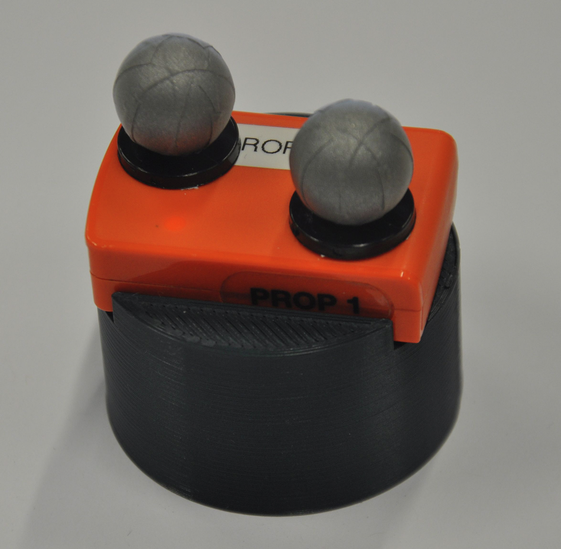
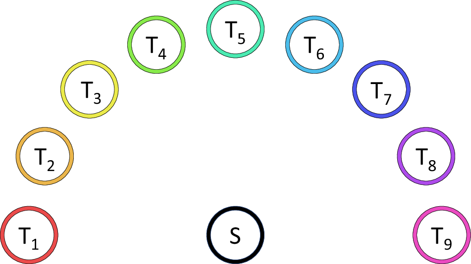
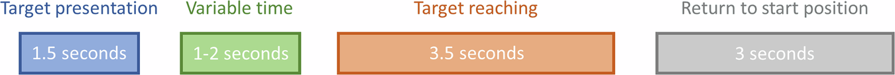

Carry the cylinder
A screen shows a target. A person lifts a cylinder and sets it down on that spot. Follow the object through the air, then try the same target with the other hand.
What the cameras saw
These 18 trials come from one person, once per target with each hand, in separate recording sessions. Two reflective markers rode on a 50 mm-wide cylinder. Infrared cameras followed them in three dimensions. The line tracks the object. Your hand could change its grip without leaving a record of which fingers moved.
The cylinder drawing stays upright to show the object’s size. Its rotation and the fingers around it are outside this replay. Coordinates give displacement from the initial marker position, in millimetres. The grid passes through that origin at 50 mm intervals. Zero seconds marks the first usable optical sample. “First 15 mm” skips to the third consecutive sample at least 15 mm from that point in three dimensions. The cue and the go signal have no measured timestamp on this clock.
The numbered circles stood 250 mm from the starting station. A screen showed the assigned location, then a sound signalled when to go. The target diagram below uses the participant’s left and right. The motion viewer keeps the camera system’s own X and Y axes. Choosing a number retrieves a recording. The experiment supplied spatial cues. Open-ended spoken instructions and gestures elicited by a concept and a picture belong to different tasks.
Take the recording with you
Open a measured path in a 3D editor. Each file includes the full sample clock and an animated cylinder.
Download this animated GLBDownload the recordingsMethods and attributionInside the original experiment






Recordings and figures by Tim Sziburis, Susanne Blex, Tobias Glasmachers and Ioannis Iossifidis. Ruhr Hand Motion Catalog · Scientific Data, 2025 · CC BY 4.0.